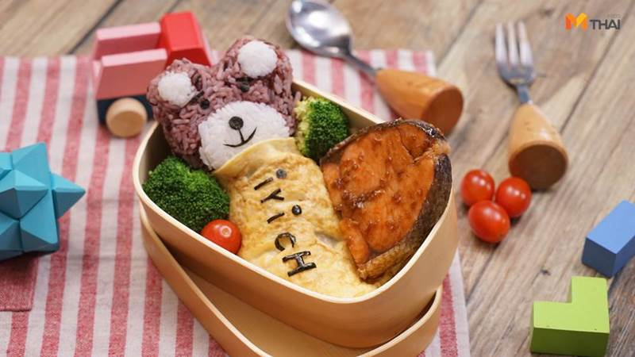

EAT&EAT
หน้าแรก
ขนมไทย
เค้ก
คุกกี้และเบเกอรี่
ไอศกรีม
ลงทะเบียน
เข้าสู่ระบบ
ข้าวหมีห่มไข่แซลม่อนซอสขิง

ส่วนผสม
•ข้าวกล้อง
•แซลมอน
•ไข่ไก่
•ซีอิ้วขาว 2 ช้อนโต๊ะ
•น้ำตาลทรายแดง 1 ช้อนโต๊ะ
•น้ำมันงา 1/2 ช้อนโต๊ะ
•กระเทียมสับ 1/2 ช้อนโต๊ะ
•ขิงอ่อนสับ 1/2 ช้อนโต๊ะ
•ผักตามชอบ
•สาหร่ายสำหรับตกแต่ง
วิธีการทำ
1.โรยเกลือเล็กน้อยเพื่อให้แซลมอนคายน้ำออกและเป็นการปรุงรสทิ้งไว้ประมาน 5 นาทีแล้วซับให้แห้ง
2. ปั้นข้าวกล้องเป็นหน้าหมี เจาะรูเอาอากาศออกเพื่ิให้ข้าวเกาะตัวแน่นขึ้น
3. ตัดสาหร่ายเป็นส่วนต่างๆของหมีเพื่อตกแต่ง
4. เตรียมซอส ผสมกระเทียบสับขิงอ่อนสับ น้ำตาลทรายแดงซีอิ้วขาว และน้ำมันงานเตรียมไว้
5.นำแซลมอนมาย่างพอสุกกลับด้านใส่ซอสลงไปย่างจนสุก เริ่มย่างจากไฟแรงพอนำแซลมอนลงย่างลดไฟกลางกลับด้าน
6. ทอดไข่เจียวด้วยไฟอ่อน
7. จัดจานสวยงามพร้อมเสิร์ฟค่า
ขอขอบคุณข้อมูลและภาพประกอบจาก
เว็บไซต์:https://food.mthai.com/baby/132678.html
Copyright © EAT&EAT nc. สงวนลิขสิทธิ์